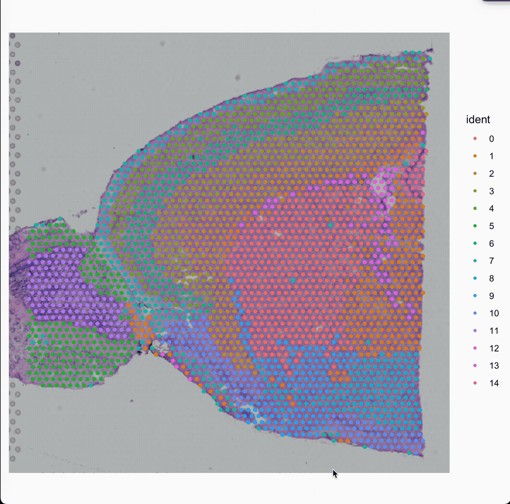
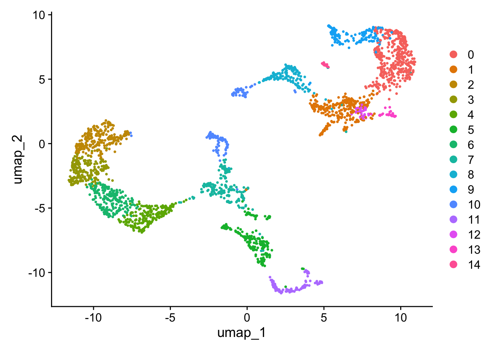
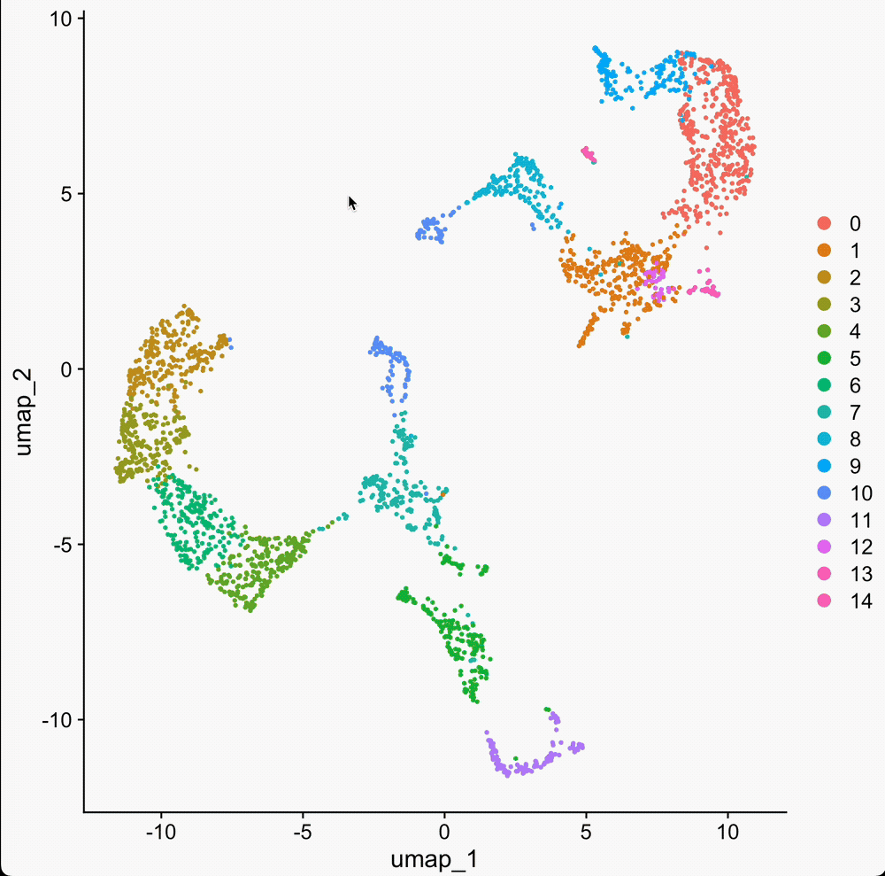
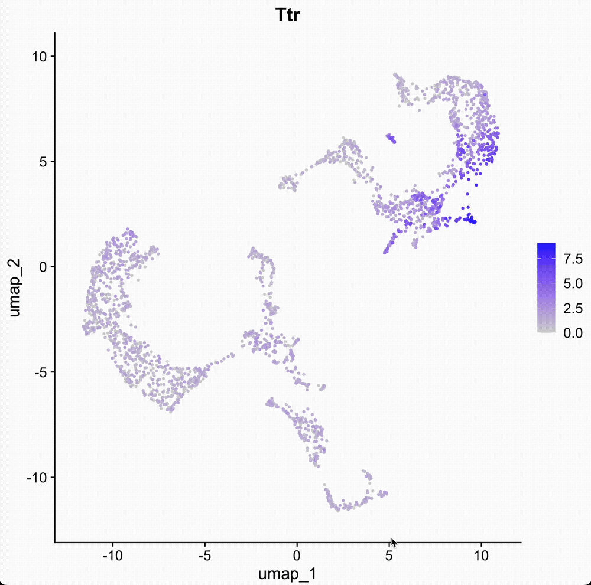
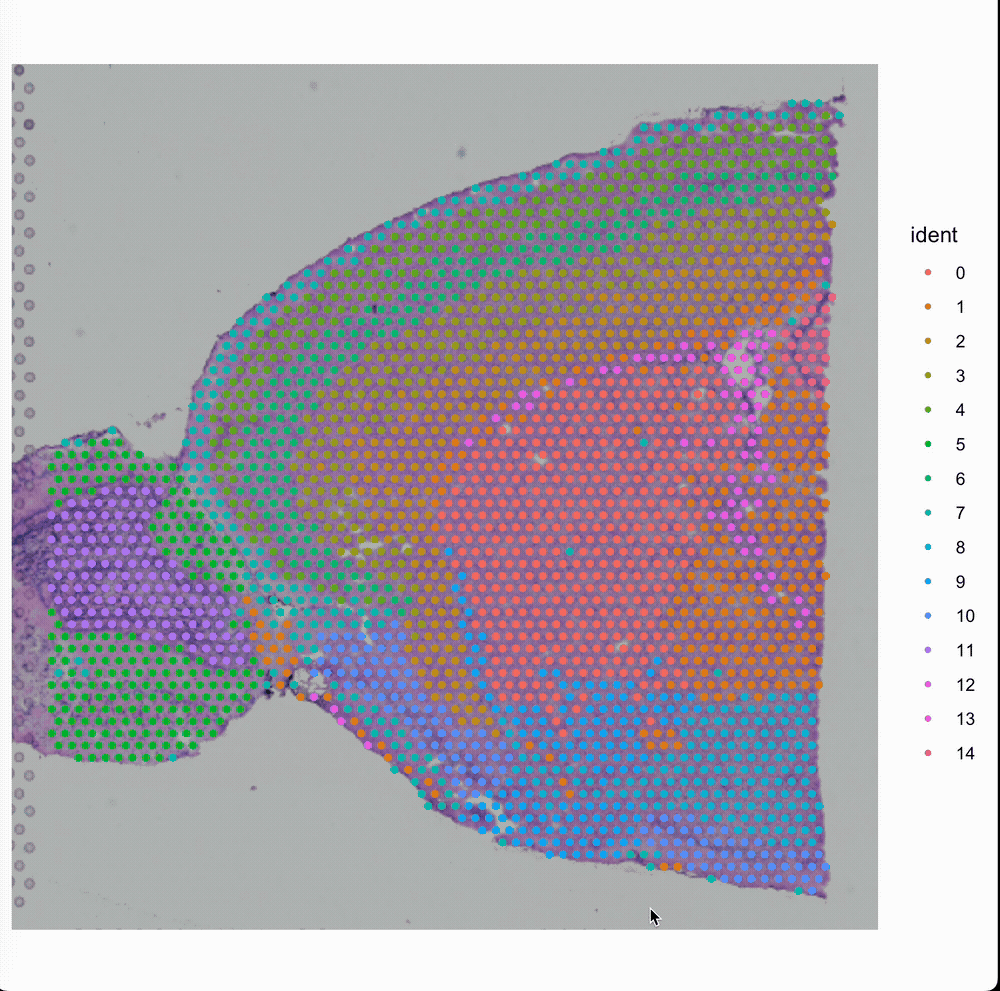

Select cells from reduction maps and spatial locations
This vignette demonstrates how to use Yano build functions to interactively select or pick cells/spots from a plot using your mouse and keyboard. While tools like CellxGene are widely used for this purpose, to the best of our knowledge, an efficient solution for performing this task within the R environment is still lacking.
Press ESC on your keyboard to exist the selection!

Now the selected cells will be exported to sel.1. If you want return a object, try to set return.object=TRUE in the function.
Select cells from dimension reduction plot
We can also select cells from dimension reduction plot.
DimPlot(brain)

sel.1<-DimSelector(brain)
Press ESC on your keyboard to exist the selection!

Select cells based on a feature expression
FeaturePlot(brain, features =c('Ttr'), order=TRUE)
Warning: The `slot` argument of `FetchData()` is deprecated as of SeuratObject 5.0.0.
ℹ Please use the `layer` argument instead.
ℹ The deprecated feature was likely used in the Seurat package.
Please report the issue at <https://github.com/satijalab/seurat/issues>.
Please note in FeatureSelector() only one feature is support at each selection. Therefore, I designed the parameter feature instead of orignal features here.

Select cells from Image-based spatial data
Here we will use 10x Genomics Xenium data, generated from Seurat’s tutorial.
In spatial transcriptomics, it is sometimes necessary to manually define capsule or membrane regions, as these areas are often thin, mixed with neighboring cells, and difficult to identify accurately. Manually specifying these regions can be beneficial for downstream analyses, where precise spatial organization of cells is critical for understanding tissue architecture and functional gradients.
sel <-SpatialConcaveHull(brain)

Questions?
If you have any questions regarding this vignette, the usage of Yano or suggestions, please feel free to report them through the discussion forum.